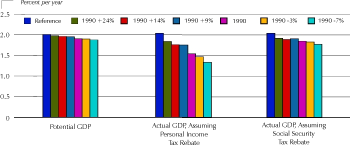
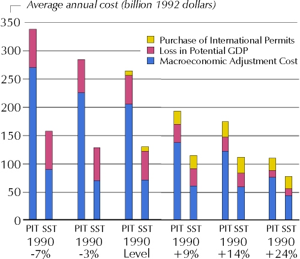
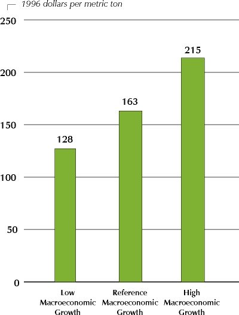
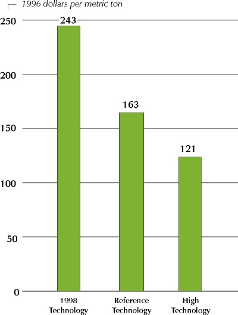

What Does the Kyoto Protocol Mean to U.S. Energy Markets and the U.S. Economy
Output and
Cost-of-Living Impacted During the Transition Period
Even though energy represents only about 7 percent of our Gross
Domestic Product (GDP), it is a crucial factor in virtually all the goods and services we
produce and consume. The effects of alternative carbon scenarios can be expressed in terms
of their impacts on the economy as a whole (e.g., GDP, capital investment, prevailing
interest rates, inflation rates) as well as their impacts on individual families and
enterprises (e.g., increased expenditures on energy, disposable income).
When energy costs rise, other factors of
production--including labor and capital--become relatively less expensive. Energy price
increases encourage adjustments in which labor and capital are substituted for more
expensive energy to the extent practicable. In the process however, some economic
potential is lost. This reduces the "potential" GDP for the Nation. EIA
calculates that such losses would range from $13 billion to $72 billion in 2010 (1992
dollars). In an economy today of over $7 trillion, which is expected to grow to over $9.4
trillion (1992 dollars) in 2010, the percentage loss in output ranges from 0.1 percent to
0.8 percent. In this context, the economy continues to grow, but at a slower rate.
Because it takes time to adjust to a new
set of factor-costs, however, there are, in addition to losses in potential GDP,
transitional costs--which probably cannot be avoided entirely. Such short-run costs arise
whenever price increases disrupt capital or employment markets. The transitional costs are
very uncertain, but possibly very significant. They impact the "actual" GDP.
Hence, the actual GDP losses are greater than the "potential" losses. The
transitional costs can be softened to the extent that price changes are anticipated and
appropriate compensatory adjustments can be made to Federal monetary and fiscal policies.

Annual
Growth Rates in Potential and Actual Gross Domestic Product, 2005-2010
This analysis assumes a
carbon-permit trading system is introduced in the form of an auction run by the Federal
Government (to focus on the most economically efficient means of reducing carbon
emissions). The domestic auction would produce substantial revenue. This study assumes
that the revenues would be recycled back into the economy to bolster disposable income and
encourage both consumption and investment, counteracting the adverse short-term effects on
the economy associated with higher energy prices and speeding the transition to
equilibrium. Taking money out of the economy through a carbon price and then returning it
encourages a shift in priorities that accomplishes the goal of achieving a carbon
emissions reduction while moderating the impacts on the economy. It modifies the national
energy mix and makes the overall economy less energy-intensive, while partly compensating
consumers and business for the loss in income resulting from higher energy prices. EIA
evaluates two illustrative recycling cases: one providing rebates via reductions in the
personal income tax, and the other through the social security tax.
EIA projects the loss in actual GDP in 2010
to range between $61 billion and $183 billion if revenues are recycled via a reduction in
social security taxes, and between $96 billion and $397 billion if they are recycled via a
reduction in personal income taxes (1992 dollars). Again, the economy grows even during
the period of adjustment but does not reach the levels of growth in potential GDP.
Although there is a definite slowing of economic growth during the transition period,
actual GDP returns to its potential path, so the effects on the economy are almost totally
muted over the longer term.
The total cost to the economy can be
estimated as the loss in actual GDP (the loss in potential GDP plus the macroeconomic
adjustment cost) plus the purchase of international permits. It is assumed that the U.S.
will purchase international permits at the marginal abatement cost in the U.S., i.e., the
domestic carbon price. Total costs range from an average annual level for the period 2008
to 2012 of $77 billion to $338 billion 1992 dollars depending on the carbon reduction case
and how funds are recycled back to the economy.

Annual
Cost of Carbon Reductions to the U.S. Economy, 2008-2012
As energy prices rise in the United States,
downstream prices for all goods and services are affected. A rule of thumb for the year
2010 is that each 10-percent increase in the level of aggregate energy prices may lead to
a 1.5- percent increase in producer prices and a 0.7- percent increase in consumer prices.
Final prices for goods and services in the 1990+9% case, as shown by the CPI, are
approximately 3.5 percent higher than the Reference Case by 2010 if carbon permit revenues
are recycled through a personal income tax rebate, and 2.0 percent higher if revenues are
recycled through a social security tax rebate.
Throughout these cases, the role of
monetary policy is critical. Higher energy prices place upward pressure on interest rates.
Based on past behavior of the Federal Reserve Board, it is assumed that they will adjust
interest rates to moderate the impact on the economy and return it to its long-run path.
For
Reference: A Matrix of Variables for Cases Analyzed by EIA
Would Some Changes
In Assumptions Revise These Projections? How? How Much?
The House Science Committee asked EIA to determine how sensitive
the results of its analysis might be to changes in three basic assumptions made for the
Reference Case. These were analyzed against the 1990+9% Case, except for the changes in
nuclear power assumptions. The changes can be framed as three questions.
Suppose . . . underlying
economic growth of the nation were higher (or lower)?
If higher or lower growth is assumed in
such factors as population, the labor force, and productivity, there would be differences
in industrial output, inflation rates and interest- rate levels. Assuming a range of
annual GDP growth between 1996 and 2020 from 1.3 to 2.4 percent, compared to 1.9 percent
in the Reference Case, total U.S. energy consumption would be lower/higher in 2010 by
about 2.2 quadrillion Btu. (A quadrillion Btu is equivalent to consuming about 500,000
barrels of oil per day for one year). To meet the same level of carbon reductions with
higher (or lower) energy consumption, the "carbon price" would also be higher
(or lower)--as shown on the adjoining graph. With a higher carbon price, less coal and
more natural gas, renewables, and nuclear power are used.
Suppose . . . technology
advanced more rapidly as a result of increased national emphasis on research and
development (or suppose--technology choices stayed as they were in 1998)?
The technology assumptions in the main
cases in the EIA report reflect expert engineering opinion of likely technological
advances--i.e., they are not technologically pessimistic. Nevertheless, to analyze the
effects of even more advanced technology, assumptions were developed by energy technology
experts for the end-use and generation sectors, considering possibilities based on
increased Research and Development. This could mean earlier introduction of products and
processes, lower costs, and higher efficiencies than assumed in the Reference Case. It was
also assumed that technology for extracting and storing carbon emissions from coal and
natural gas-fired electric generators might become available. A "low tech"
sensitivity assumes all future choices are made from today's technology.
The range of energy consumption differences
was similar to the GDP growth sensitivity. Higher technology lowers energy consumption in
2010 by 2.1 quadrillion Btu; freezing technological progress forces consumption to grow by
an extra 1.5 quadrillion Btu. The related graph compares carbon price changes. In the
residential and commercial sectors, lower carbon prices encourage higher consumption and
balance the effect of advanced technology. Efficiency improvements and lower carbon prices
allow coal use in generation to be about 40 percent higher in 2010. With low technology,
converse trends prevail; more natural gas, nuclear energy, and renewables are needed to
meet carbon reduction targets. The industrial and transportation sectors are more
sensitive to technology changes than to price changes.
Suppose . . . building of
nuclear power plants resumed in this country?
Because new nuclear plants did not compete
economically with fossil and renewable plants in the 1990+9% Case, this sensitivity was
analyzed against 1990-3% Case (with a carbon price of $294 in 2010). Some of the extra
costs assumed for "first of a kind" advanced-design plants were also relaxed.
Under these conditions, 1 to 2 new 600- megawatt nuclear plants would be added by 2010;
and 2020 could see about 68 new plants. Because most would start up after the 2008-2012
period, carbon prices in 2010 would be relatively unchanged. By 2020, however, the 1990-3%
Case carbon price of $240 per metric ton would be reduced to $199. Because of the lower
carbon price in this sensitivity, all sectors have higher energy consumption.
 
| How (and Why) Do
These Results Differ from Other Projections?
Why haven't all projections agreed? Other analyses of the
Protocol have different results because of different assumptions for--
• Economic growth in the United States
and the resulting emissions--these alter the base from which reductions must be made
• The extent of international trading,
joint implementation, and the clean development mechanism
• Cost and efficiency of new
technologies
• How rapidly and to what extent
consumers respond to energy price increases--observations of past behavior indicate that
consumers may change habits rather slowly
• How rapidly capital stock turns
over--much of the equipment purchased in 1999 will likely still be in use in 2010 but some
analyses do not capture all the transition costs
• When actions to reduce emissions
begin--EIA assumes that actions begin in 2005 but some analyses assume actions have
already begun
• How much knowledge consumers have of
future events and how early they begin to adjust. EIA assumes that end-use consumers begin
to adjust when a price increase occurs, but some analyses assume that adjustments begin
well in advance
Six other projections of carbon prices and
their effects, from various sources, are outlined in Chapter 7 of the full report. Two
cases were analyzed: the1990-7% Case in which the United States is assumed to reduce
carbon emissions to 7 percent below 1990 levels for the period 2008-2020 without the
benefit of sinks, offsets, international carbon permit trading, or the Clean Development
Mechanism (CDM); and a best estimate of the impact on U.S. energy markets if sinks,
offsets, and emissions trading among the participating developed nations (Annex I) were
allowed, but not global trading or CDM.
If the United States is required to achieve
stabilization at the 1990-7% levels without Annex I trading and no credit for sinks and
offsets, the estimates of carbon prices required in 2010 range from a low of $221 per
metric ton to $348 per metric ton, with the vast majority in the $265 to $295 per metric
ton range. Actual GDP losses are projected to range from $102 to $437 billion dollars in
2010 (1996 dollars). With Annex I trading and credits for sinks and offsets from other
gases, the carbon price ranges between $100 per metric ton to $175 per metric ton and the
loss of actual GDP ranges between $56 and $207 billion dollars in 2010. Estimates of
internationally purchased carbon credits by the U.S. range from 147 to 288 million metric
tons. |
Energy
Information Administration Reports on Greenhouse Gas Emissions:
- Impacts of the Kyoto Protocol on U.S.
Energy Markets and Economic Activity, published in October 1998, with analysis of the
Kyoto Protocol
- Annual Energy Outlook 1998, published
in December 1997, with projections of domestic energy carbon emissions through 2020
- International Energy Outlook 1998, published in April 1998, with projections of international energy carbon emissions through
2020
- Emissions of Greenhouse Gases in the
United States 1996, published in October 1997, with an inventory of all domestic
greenhouse gas emissions
- Mitigating Greenhouse Gas Emissions:
Voluntary Reporting, published in October 1997, reporting voluntary actions in 1995
to reduce greenhouse gases in the United States
- Greenhouse Gas, Global Climate Change,
and Energy, an information brochure on greenhouse gases
What Are Some of
the Issues in Reducing Carbon Emissions in the United States?
- Availability and cost of technology
- Consumer acceptance of more advanced or
efficient technologies--and of nuclear and renewable generating plants
- Identification of fiscal and monetary
policies to moderate economic impacts
- Feasibility of the electricity, natural gas,
and renewable industries to adjust to the new requirements
- Possible changes in industrial composition
- Timing and phase in of the necessary
transitions
| This report was prepared by
the Energy Information Administration, the independent statistical and analytical agency
within the Department of Energy. The information contained herein should be attributed to
the Energy Information Administration and should not be construed as advocating or
reflecting any policy position of the Department of Energy or of any other organization.
Service Reports are prepared by the Energy Information Administration upon special request
and are based on assumptions specified by the requester. |
|
{kind=link}
{kind=link}
{kind=link}
{kind=link}